JSVisualizer は、JavaScript のプログラムが1ステップずつどう動くかを、さまざまな図で確かめながら学ぶための Web アプリです。
- https://tntetsu.github.io/JSVisualizer/ をパソコンの最新のブラウザ（Chrome・Edge・Firefox・Safari など）で開くだけで使えます。インストールやログインは要りません。
- コードはすべてブラウザの中で実行されます。書いたコードや操作の内容がサーバーに送られることはありません。
1. 画面の構成
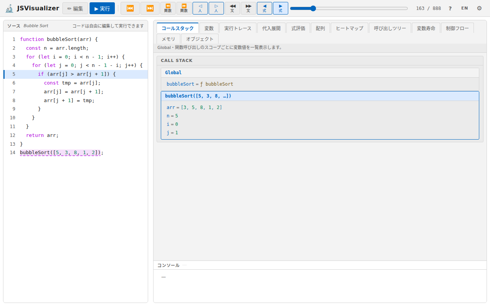
| 場所 | 内容 |
|---|---|
| 上部 | 「編集」「実行」ボタン、サンプル選択（編集モードのとき）、ステップ実行のボタンとスライダー（実行モードのとき）。右端に使い方（?）・表示言語（EN ／ 日）・設定（⚙）のボタン |
| 左側（ソース） | コード。編集モードでは書き換えられ、実行モードでは今どこを実行しているかがハイライトされます |
| 右側 | 可視化ビュー。上のタブで表示を切り替えます。タブの下に、そのビューの説明が1行表示されます |
| 右側の下（コンソール） | console.log() で出力した内容が表示されます。どのビューを見ているときも表示されています |
左右の境目をドラッグすると、コードとビューの幅を変えられます。コンソールの上端をドラッグすると、コンソールの高さを変えられます。
2. コードを用意する
開いた直後は、サンプルのコード（フィボナッチ数列）が入っています。
サンプルから選ぶ
編集モードのとき、画面上部のサンプル選択（プルダウン）から、21種類のサンプルコードを選べます。
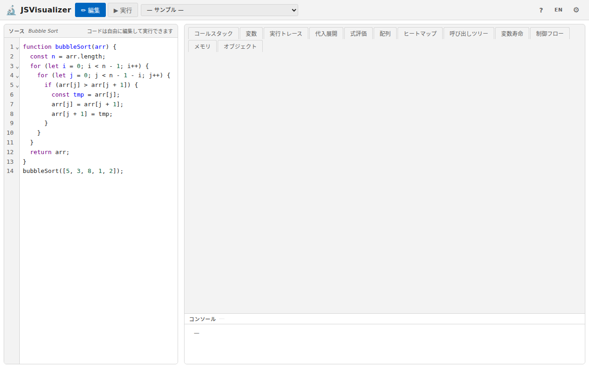
| 分類 | サンプル |
|---|---|
| 探索 | 線形探索、二分探索 |
| ソート（基本） | バブルソート、選択ソート |
| ソート（高度） | クイックソート、マージソート |
| ソート（オブジェクト） | 数値キーでソート、文字列キーでソート |
| 数学・アルゴリズム | ユークリッドの互除法（ループ／再帰）、階乗、フィボナッチ数列（再帰／動的計画法） |
| データ構造 | 二分木、連結リスト |
| スコープ・オブジェクト | クロージャ、クラスと継承 |
| Study Tasks | 評価実験用の課題（バグ探し・呼び出し回数・途中状態のトレースなど） |
自分でコードを書く
編集モードでは、左側のコードを自由に書き換えられます。ほかの場所で書いたコードを貼り付けても構いません。書き終えたら「▶ 実行」を押します。
- ES2015 以降の主な構文（
let・const、アロー関数、クラス、分割代入、テンプレート文字列、for...ofなど）が使えます。 - 結果の確認には
console.log()を使ってください。出力はコンソールに表示されます。画面（DOM）の操作やネットワーク通信などのブラウザの機能は使えません。 - 書き換えたコードは保存されません。ページを再読み込みすると元に戻るので、残したいコードは別の場所に控えておいてください。
共有されたリンクから開いたとき
授業や教材で配られた、特定のコードを開くリンクから JSVisualizer を開くと、そのコードが読み込まれた状態で始まります。このときサンプル選択には、組み込みのサンプルの代わりに、リンク先のコードだけが並びます（コードが1つだけのときは選択できません）。
3. 編集モードと実行モード
| ボタン | 説明 |
|---|---|
| ✏ 編集 | 編集モードにします。コードを自由に書き換えられます。サンプル選択でコードを切り替えられるのもこのモードです |
| ▶ 実行 | コードを実行して実行モードにします。プログラムは最後まで一気に実行され、その過程がすべて記録されます。そのうえで、ステップ実行のボタンで好きな時点に進んだり戻ったりして、その時点の様子を見ることができます |
コードを書き換えたら、もう一度「実行」を押すと、書き換えたコードで実行し直します。
エラーが出たとき
コードに誤りがあると、コードの下にエラーメッセージが表示されます。
| 表示 | 意味 |
|---|---|
| Syntax Error（構文エラー） | カッコの閉じ忘れやつづりの誤りなど、書き方の誤りで実行できない。メッセージの 21:9 のような数字は、誤りのある行と列です |
| Runtime Error（実行エラー） | 書き方は正しいが、実行している途中で問題が起きた（定義していない変数を使った、など）。エラーが起きる直前までは、ステップ実行で様子をたどれます |
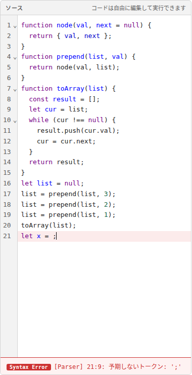
実行が 10,000 ステップを超えると、ループが終わらないなどの可能性があるため、そこで実行を止めて実行エラーにします。止まった時点までは、ステップ実行で様子をたどれます。
4. ステップ実行
実行モードでは、画面上部のボタンでプログラムの実行を1ステップずつ進めたり戻したりできます。どれくらい細かく進むかが違う4種類のボタンがあり、それぞれに「戻る」と「進む」があります。
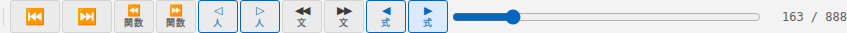
4種類の細かさ
| ボタン | 細かさ | 1回押すと |
|---|---|---|
| ◀ 式 ／ ▶ 式 | いちばん細かい | 式を1つ評価するごとに進みます。a[j] > a[j + 1] なら、a[j] の値、a[j + 1] の値、比較の結果、というように部分ごとに止まります。式がどういう順番で計算されるかを確かめたいときに使います |
| ◁ 人 ／ ▷ 人 | ふつう（まずはこれがおすすめ） | 変数への代入、if の条件判定、ループの条件判定や更新、関数の呼び出しなど、人が紙でトレースするときに書き留めるような「意味のある変化」ごとに進みます |
| ◀◀ 文 ／ ▶▶ 文 | 粗い | 文（1行の命令）ごとに進みます。文の中の細かい計算は飛ばします |
| ⏪ 関数 ／ ⏩ 関数 | いちばん粗い | 関数に入る・関数から戻るところまで一気に進みます。再帰関数の呼び出しの流れを大まかに追いたいときに使います |
迷ったら「▷ 人」で進めてみてください。もっと細かく見たいところだけ「▶ 式」、ループや関数を早送りしたいときは「▶▶ 文」や「⏩ 関数」を使うと効率よく追えます。
そのほかの操作
| 操作 | 説明 |
|---|---|
| ⏮ | 先頭（実行開始の時点）に戻ります |
| ⏭ | 末尾（実行が終わった時点）に進みます |
| スライダー | つまみをドラッグすると、好きな時点に一気に移動できます |
ステップ数（例: 180 / 874） | 全体のうち今何番目のステップにいるか（いちばん細かい「式」の単位で数えた数）です |
キーボードでの操作
次のキーでも操作できます（大文字は Shift を押しながら）。
| 操作 | 戻る | 進む |
|---|---|---|
| 式 | ← または b | → または n |
| 人 | H | h |
| 文 | V | v |
| 関数 | F | f |
| 先頭へ／末尾へ | Home | End |
1〜9 のキーで、左から1〜9番目の可視化ビューのタブに切り替えることもできます。
5. コードのハイライト
実行モードでは、左側のコードに、今どこを実行しているかが3種類の印で表示されます。
| 印 | 意味 |
|---|---|
| 青い帯（行の左に青い線） | 今実行している行 |
| オレンジの背景 | 今評価している式の範囲 |
| 紫の破線の下線 | 関数の中を実行しているとき、その関数を呼び出した式（呼び出し元） |
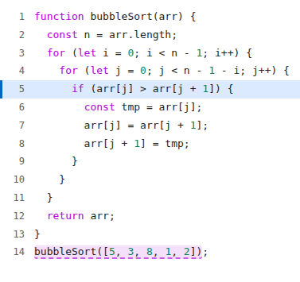
bubbleSort は14行目から呼び出された（紫の破線）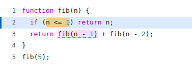
fib は fib(n - 1) から呼び出された（紫の破線）6. 可視化ビュー
画面右側では、プログラムの動きをさまざまな形で見ることができます。上部のタブで12種類のビューを切り替えられます。目的によって分かりやすいビューは違うので、いろいろ試して自分に合った見方を探してみてください。
- コードの内容によっては使えないビューがあり、そのタブはグレーで表示されます（たとえば、関数を使っていないコードでは「代入展開」「呼び出しツリー」は使えません）。
- 最後に見ていたタブは、次に開いたときにも選ばれた状態になります。
ビューの分類
12種類のビューは、何を見るかと時間をどう見せるかの2つの観点で整理できます。
何を見るかは、次の3種類に分かれます。
- 状態：ある時点でプログラムが持っている値（変数の値、呼び出し中の関数、メモリの中身）
- 振る舞い：プログラムが時間とともにどう進むか（式が計算される順番、文が実行される順番・回数、関数が呼び出される順番）。式・文・関数は、ステップ実行の「式」「文」「関数」の細かさに対応しています
- 配列・オブジェクト：いくつもの値をまとめて持つデータ
時間をどう見せるかは、次の2種類です。
- その時点を見るビュー（アニメーション型）：ステップ実行で今いる1時点の様子だけを表示し、ステップを進めるたびに表示が変わります
- 経過をまとめて見るビュー（タイムライン型）：画面の縦または横を時間の流れにして、実行の経過をまとめて表示します。今いる時点は強調表示されます
| 何を見るか | その時点を見る | 経過をまとめて見る | |
|---|---|---|---|
| 状態 | 変数の値 | 変数 | 実行トレース |
| 呼び出し中の関数 | コールスタック | 変数寿命 | |
| メモリの中身 | メモリ | — | |
| 振る舞い | 式の計算 | 式評価 | 代入展開 |
| 文の実行 | 制御フロー | ヒートマップ | |
| 関数の呼び出し | 呼び出しツリー | — | |
| 配列・オブジェクト | 配列 | 配列 | 実行トレース |
| オブジェクト | オブジェクト | — | |
同じものを「その時点」と「経過」の両方で見比べると理解が深まります。たとえばループの中で変数の値がどう変わるかは、「変数」でその時点の値を確かめつつ、「実行トレース」で1回目・2回目…の値を並べて見ると分かりやすくなります。
状態を見るビュー
| タブ | 見せ方 | 内容 |
|---|---|---|
| 変数 | その時点 | コードの各行（縦）× 変数（横）の表です。各行を最後に実行したときの変数の値が表示され、前のステップから変わった値はオレンジの太字になります。列の表示／非表示の切り替えや、ドラッグでの並べ替えもできます |
| 実行トレース | 経過 | 代入や条件判定などが起きたステップを、実行した順に上から一覧で表示します。各ステップの変数の値と、条件式が true / false のどちらだったかが分かります。配列を使うコードでは、各ステップの配列と、i や j が指している位置の小さな図も並ぶので、ループの回ごとの変化を比べられます |
| コールスタック | その時点 | 今の時点のすべての変数の値を、全体（Global）と、呼び出し中の関数ごとに分けて表示します。関数の中では、呼び出しごとに別の変数があることが分かります |
| 変数寿命 | 経過 | 横を時間、縦を関数の呼び出しの深さとして、それぞれの関数の呼び出しがいつ始まっていつ終わったかを帯で表示します。帯には関数名と引数、その呼び出しの変数の値が書かれています。関数の引数やローカル変数がいつからいつまで存在するかが分かります。縦の破線が今の時点です |
| メモリ | その時点 | 変数（スタック）と、配列・オブジェクトの実体（ヒープ）を分けて図示し、変数がどの配列・オブジェクトを指しているかを矢印で示します |
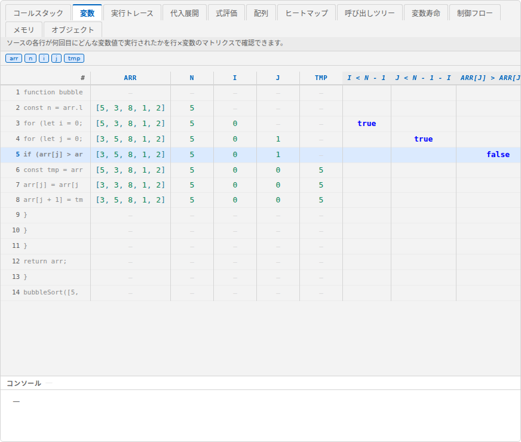
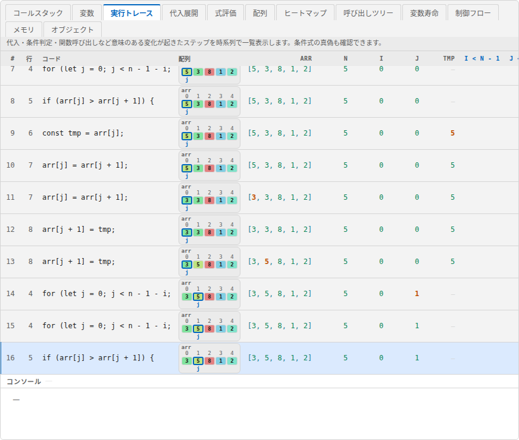
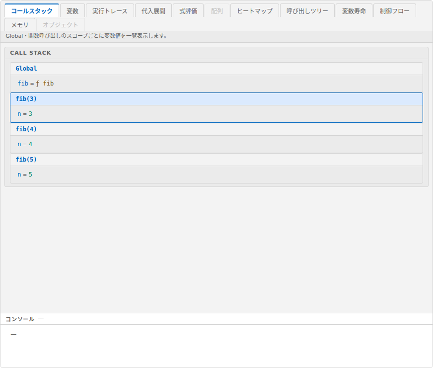
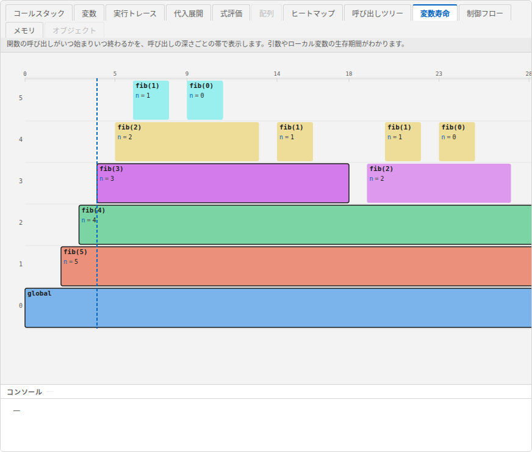
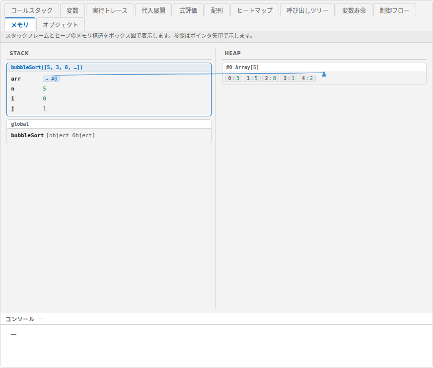
振る舞いを見るビュー
| タブ | 見せ方 | 内容 |
|---|---|---|
| 式評価 | その時点 | 今計算している1行の式が、部分ごとに値に置き換わりながら最終的な値になるまでの過程を表示します。オレンジは直前に置き換わった部分、青の太字は次に計算される部分です。|| や && で計算が省略された部分は、元の式のまま残ります |
| 代入展開 | 経過 | 再帰関数の呼び出しを、fib(5) → fib(4) + fib(3) → … のように、関数呼び出しをその結果の式に置き換えながら展開していく過程を、上から順に表示します |
| 制御フロー | その時点 | 実行した行をつないだフローチャートを表示し、今実行している行を強調します。ループで戻る流れはオレンジの破線で示され、実行されなかった分岐はグレーになります |
| ヒートマップ | 経過 | 各行が何回実行されたかを、色の濃さと「今までの回数 / 全体の回数」で表示します。右側の点の並びは各行がいつ実行されたかを表し、ループで何度も実行される行がひと目で分かります |
| 呼び出しツリー | その時点 | 関数の呼び出しを木の形で表示します。各ノードに引数と戻り値が書かれ、灰色の破線は未呼び出し、青の太線は実行中、緑は完了した呼び出しです。左下の cost は、そのノードから下にある呼び出しの数（自分自身を含む）です。再帰関数が何回呼び出されるかを確かめるのに便利です |
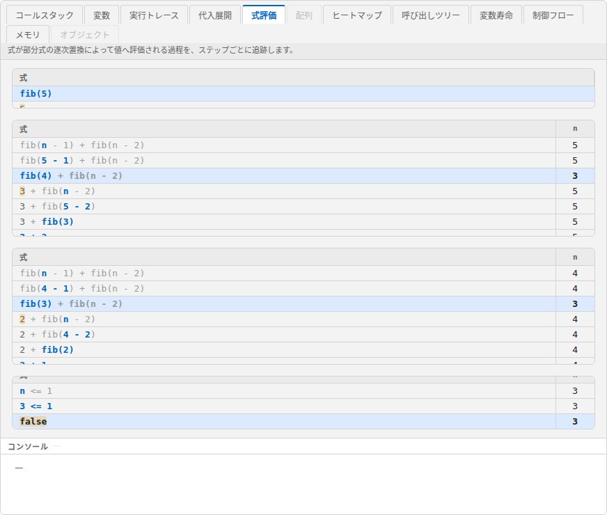
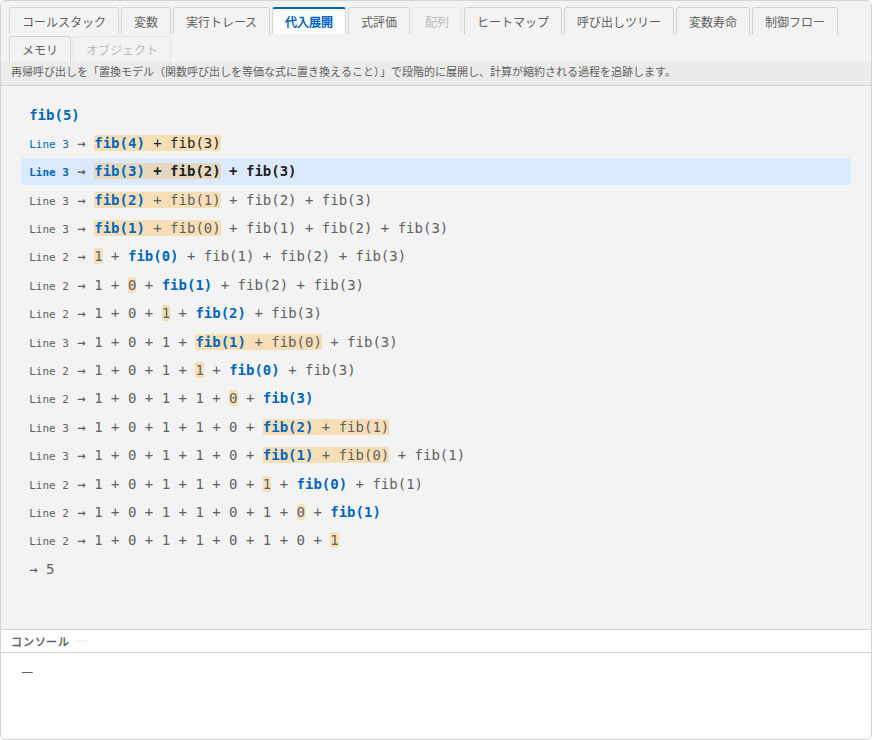
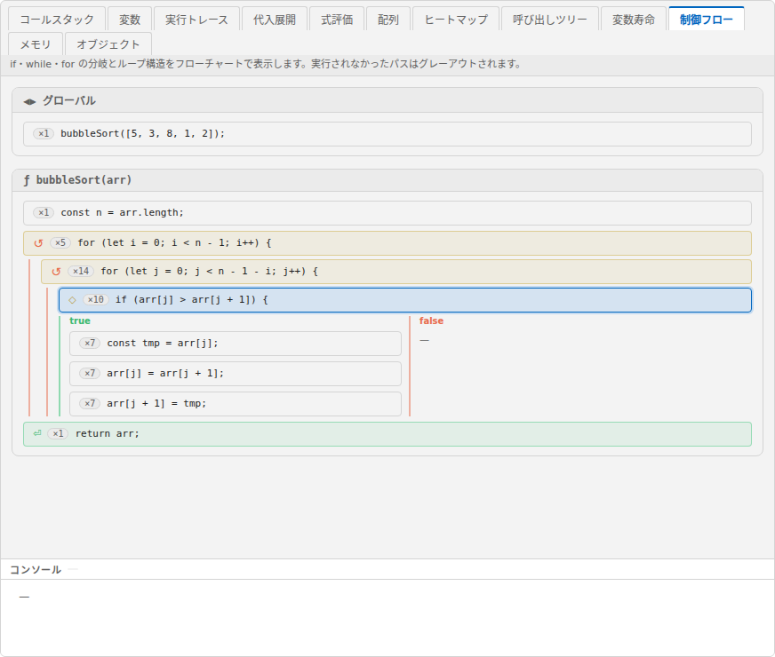
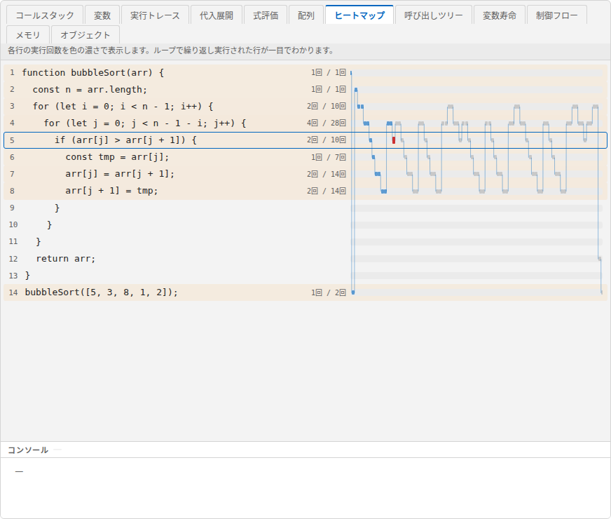
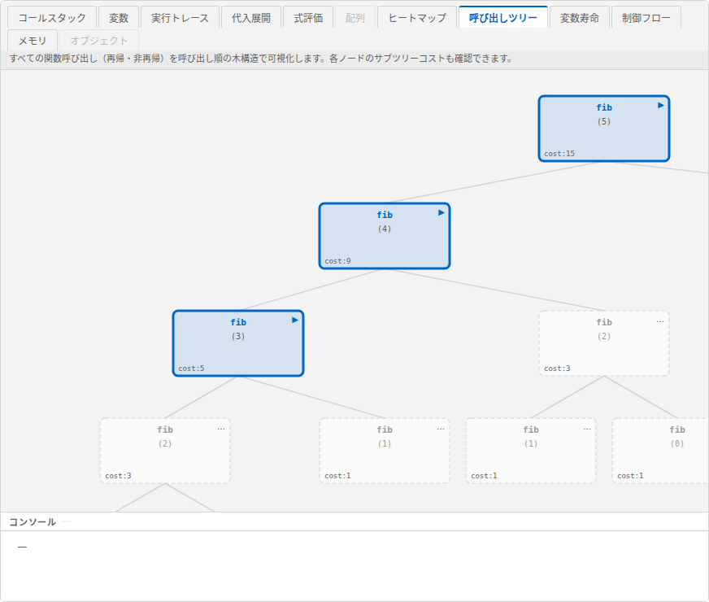
配列・オブジェクトを見るビュー
| タブ | 見せ方 | 内容 |
|---|---|---|
| 配列 | その時点 | 配列の要素をマス目で表示します。値の大きさによってマスの色が変わります。i や j のように添字として使われている変数は、どの要素を指しているかがマスの下に表示されます。表示する配列は上のボタンで選べます。配列の経過をまとめて見るには「実行トレース」を使います |
| オブジェクト | その時点 | 配列・オブジェクトどうしの参照関係をグラフで表示します。連結リストや木構造の確認に向いています |
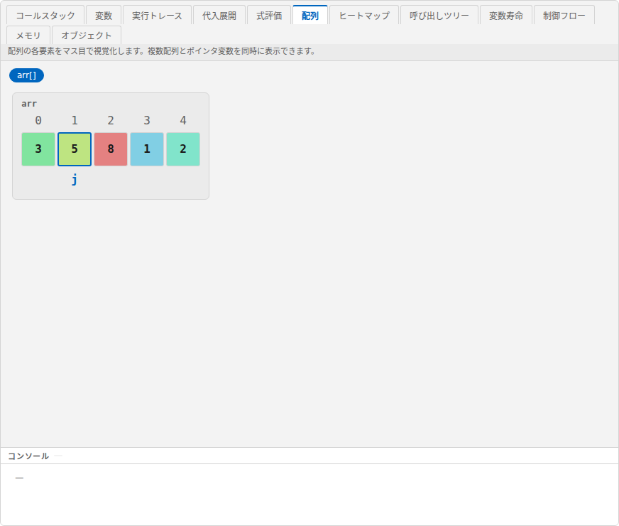
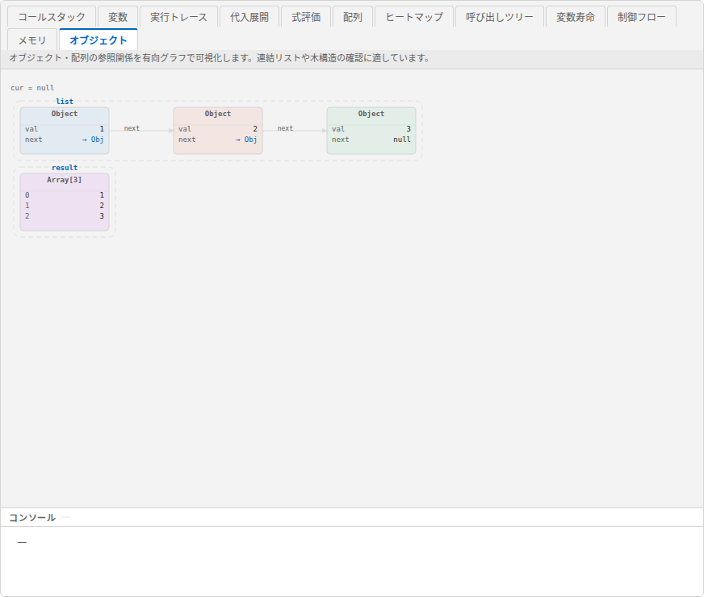
タブの並び順は上の分類とは異なります（左から コールスタック・変数・実行トレース・代入展開・式評価・配列・ヒートマップ・呼び出しツリー・変数寿命・制御フロー・メモリ・オブジェクト）。この分類の考え方は、論文「プログラムの動作を複数のビューで可視化するプログラム実行環境の提案」（田中・上田、IS-26-049）の表1に基づきます。
7. その他の機能
| ボタン | 説明 |
|---|---|
| 右上の ? | この使い方のページを開きます（表示言語に合わせて日本語版／英語版） |
| 右上の EN ／ 日 | ボタンやタブの表示を英語／日本語に切り替えます |
| 右上の ⚙ | ライトテーマ（明るい画面）とダークテーマ（暗い画面）を切り替えられます。設定パネルの下にある「Session Log」は評価実験用の機能で、ふだんは使いません（記録はブラウザの中だけで行われ、JSON／CSV ファイルとして保存できます） |
テーマ・言語・左右の幅・コンソールの高さ・最後に見ていたタブはブラウザに保存され、次に開いたときもそのままになります。
8. 困ったときは
| こんなとき | どうする |
|---|---|
| ステップ実行のボタンが表示されない | 編集モードになっています。「▶ 実行」を押してください |
| サンプル選択が表示されない | 実行モードになっています。「✏ 編集」を押してください |
| サンプル選択を押しても選べない | コードを1つだけ開くリンクから開いています。組み込みのサンプルを使うには、https://tntetsu.github.io/JSVisualizer/ を開き直してください |
| 「最大ステップ数 10,000 を超えたため停止しました」と表示される | ループが終わらない、再帰が止まらない、などの可能性があります。止まった時点までステップ実行で様子をたどり、終了条件を確認してください。処理の量が多いだけの場合は、扱うデータを小さくしてください |
| キーボードでステップ実行できない | コードの編集欄などの入力欄にカーソルがあると、キー入力はそちらに入ります。実行モードで画面のほかの場所を一度クリックしてから操作してください |
| タブがグレーで選べない | そのコードでは使えないビューです（関数を使っていないコードの「代入展開」「呼び出しツリー」など） |
| 画面が正しく表示されない | パソコンの最新のブラウザを使ってください。ページを再読み込みすると直ることがあります（スマートフォンでの利用は想定していません） |